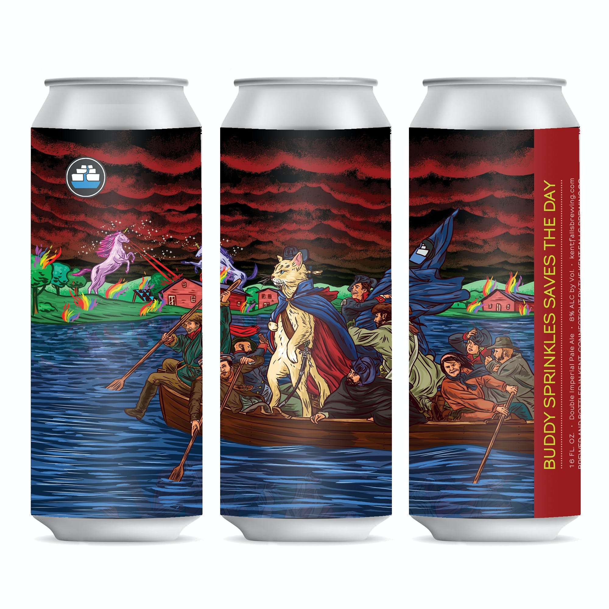

HOME
IPAs
Buddy Sprinkles Saves The Day IPA
Kent Falls Brewing Co.
Named for their farm’s tremendous cat, Kent Falls Brewing make this IPA with Connecticut grown Synergy 2 Row barley, wheat and oats and amply hop it with Citra, Mosaic and Vic Secret for an orange citrus burst and clean crisp finish.
The brewery sits on, and is a part of Camps Road Farm; a 50 acre diversified farm in Kent, CT. The farm focuses on pasture-raised poultry and pork, along with their 1 acre of hops and acre and a half of cider apples destined for Neversink Spirits, their distillery located in Port Chester, NY.
Check out their site HERE 